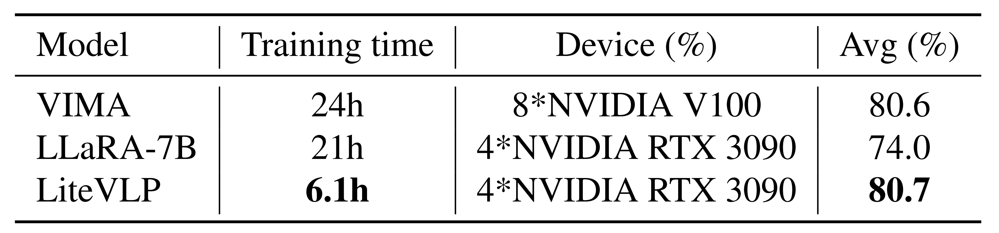

Efficiency Analysis
Training Time
Our method demonstrate a significant advantage on training efficiency. Specifically, we achieve an average success rate of 80.7% in just 6.1 hours of training, using 4 NVIDIA RTX 3090 GPUs. In comparison, VIMA, which is trained on 8 NVIDIA V100 GPUs, takes 24 hours and achieves an average success rate of 80.6%, while LLaRA-7B, trained on 4 NVIDIA RTX 3090 GPUs, requires 21 hours and achieves 74% on average. These results highlight the efficiency of our approach, which not only reduces training time significantly by 17.9 hours compared to VIMA and 14.9 hours compared to LLaRA-7B but also performs excellently even on less powerful GPU setups.

Inference Speed
With a lightweight design, our model not only significantly reduces training time, but also accelerates inference speed, demonstrating a huge advantage on low latency. We fairly compare our LiteVLP-m with Mipha-3B and LLaRA-7B on VIMA-Bench tasks, with the same NVIDIA RTX 3090. As shown in the following figure, our LiteVLP-m achieves a superior performance with 6.8 times lower inference latency than LLaRA. This result can be attributed to two main factors: the smaller size of our model, and the effectiveness of our MOC module in shortening the input sequence.